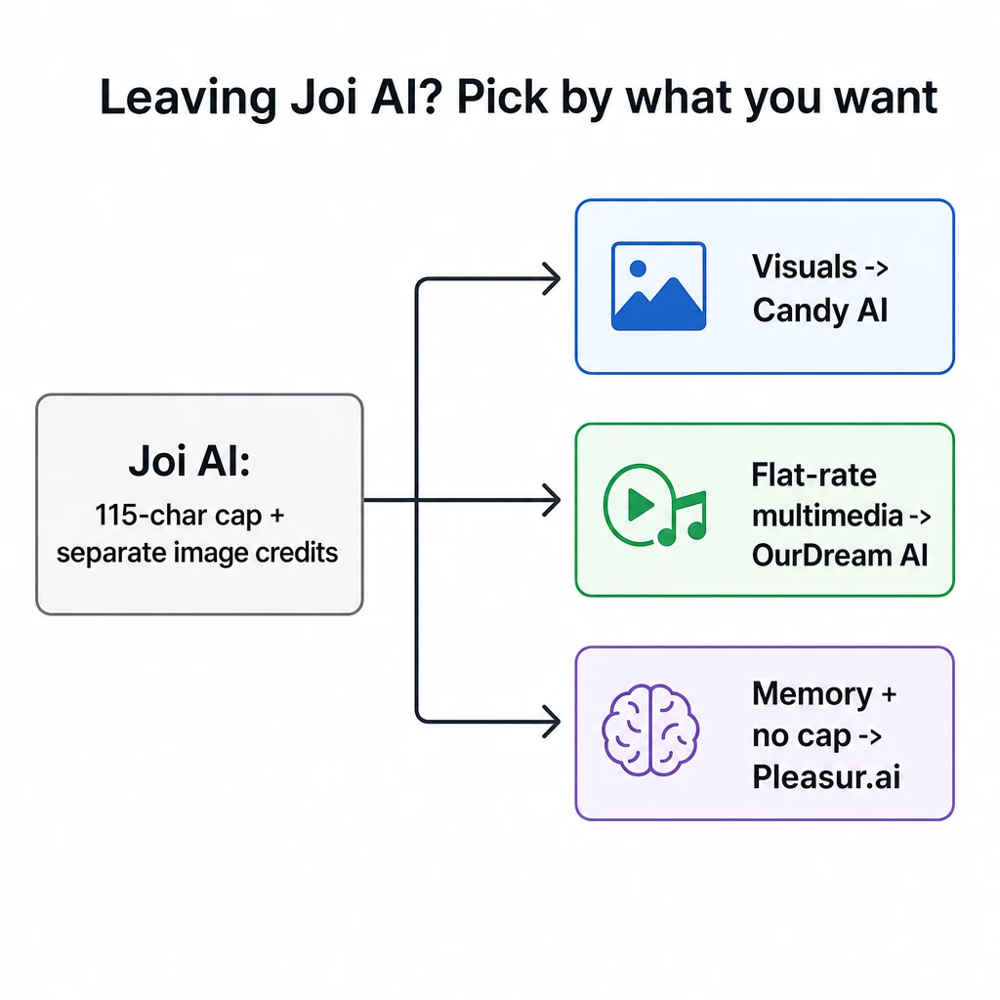
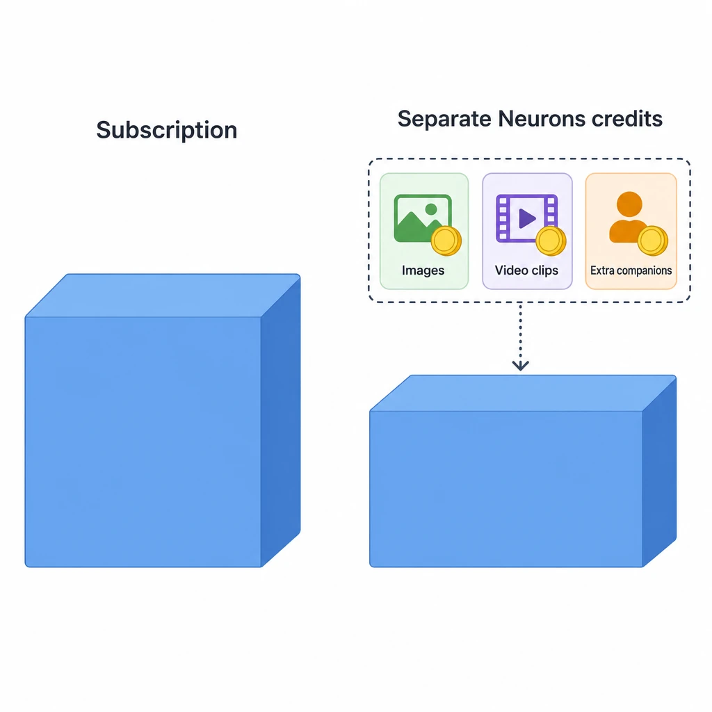
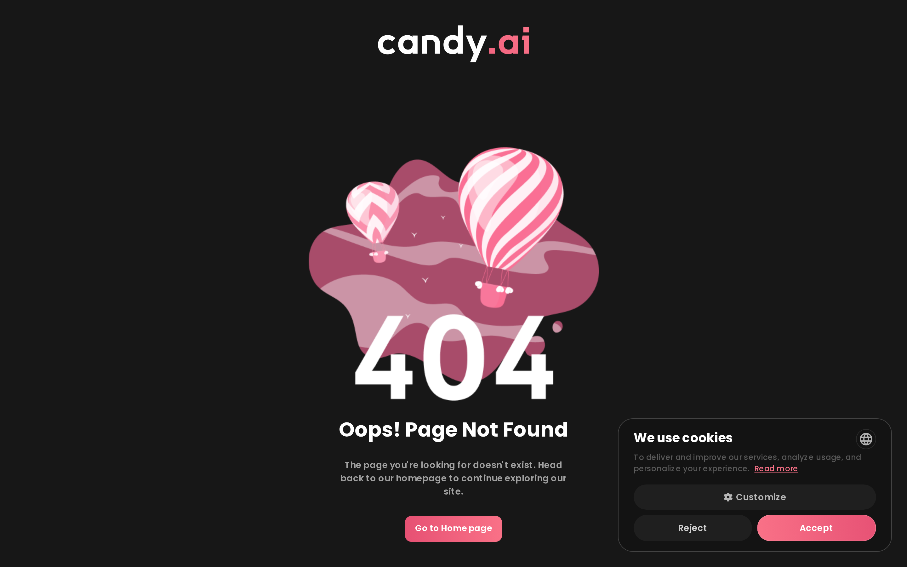
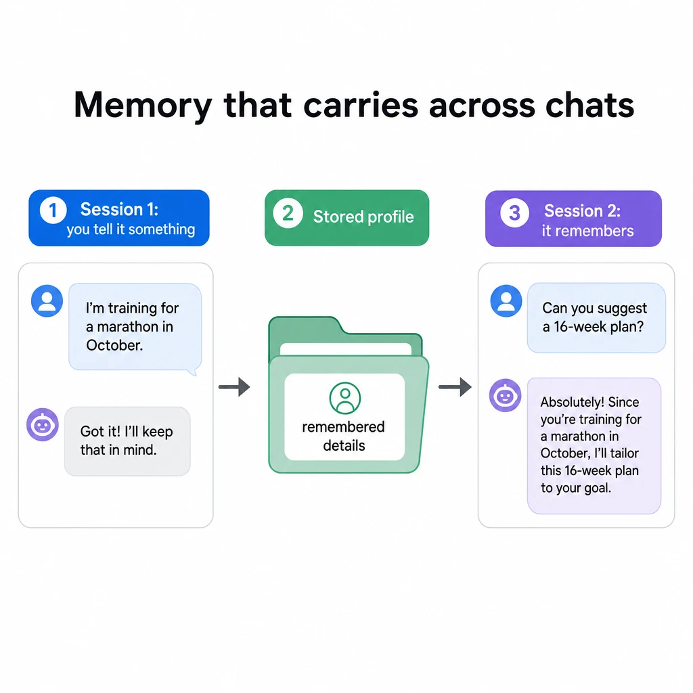

7 Best Joi AI Alternatives in 2026
You're mid-scene, building momentum, and the input box just stops you. Joi AI's reported 115-character message cap and its separate Neurons billing for images frustrate a lot of users inside the first session. The best Joi AI alternatives in 2026 are Candy AI for visual quality, OurDream AI for flat-rate multimedia, and Pleasur.ai for persistent memory with no message cap — each one fixes at least one of Joi's core limits.
That's the short answer. The longer one is that there's no single "best" here, because the right pick depends on which Joi pain sent you looking. If it's the cramped message box, you want a no-cap app. If it's watching your image credits drain on top of the subscription, you want flat-rate or readable coin pricing. If it's a companion that forgets you between logins, you want memory that carries.
This list ranks seven apps against those pains, with a no-hype at-a-glance table, a privacy axis the other roundups skip, and quick answers at the end. We've covered the neighboring clusters too — the best Character AI alternatives and the best JanitorAI alternatives in 2026 — if Joi isn't the only app you're weighing.

Why people are leaving Joi AI in 2026
Two things push people off Joi AI: a reported cap of around 115 characters per message that cuts roleplay off mid-sentence, and a separate "Neurons" credit pool that bills images and extra companions on top of the subscription you already pay for.
Take the cap first. Hands-on reviewers report a roughly 115-character limit per message — a cap Joi's own site doesn't publish, so verify it on the current app before you decide. One reviewer put the feeling exactly: you're mid-scene, building momentum, and the input box just stops you, with the 115-character cap killing any chance of deep roleplay. At 115 characters you can't write a full description of a room, a mood, or an action — you chop it into fragments and the scene loses its rhythm. For a product whose whole appeal is immersion, that's the wrong place to put a wall.
Then there's the money. According to third-party reviews, images, video clips, and extra companions draw on a separate Neurons credit pool layered on top of the subscription; reviewers report extra companions cost about 1,000 Neurons (around $20) each, with images drawing on the same separate pool. Joi doesn't list these prices publicly, so treat them as reviewer estimates, not published specs. The pattern is what matters: your base plan buys text, and the visuals you probably came for sit behind a second currency.
None of this makes Joi a bad app. Its appeal is a genuinely low base price — reviewers cite a premium plan around $17.77 a month, dropping to roughly $5 a month on the annual plan and lower still with promo codes. The catch is everything metered on top. Joi isn't broken; it's limited. And the rest of the field has spent the last year competing on exactly the two limits you just hit. For context, one widely-cited count puts 337 AI companion apps on the market, 128 of them launched in 2025 alone — you have options.
Here's the whole field at a glance before the detail on each.

The best Joi AI alternatives at a glance
Seven apps cover almost everyone leaving Joi AI, and the table below shows where each one wins before the detail underneath. Read it left to right: pick the app whose "best for" matches the Joi pain you're escaping.
For context, the row Joi users are leaving reportedly sits at a ~115-character message cap and around $17.77/mo before Neurons add-ons (reviewer figures, not Joi-published). Here's the field against that baseline.
| App | Best for | Message cap | Memory | Media billing | Content stance | Starting price |
|---|---|---|---|---|---|---|
| Candy AI | Visual quality and video | None stated | Per-character | In-plan plus add-ons | Adult, 18+ | ~$12.99/mo |
| OurDream AI | Flat-rate multimedia | None stated | Holds past ~100 messages | Bundle plan + in-app coins | Adult, 18+ | ~$9.99/mo annual (~$19.99/mo) |
| Pleasur.ai | Persistent memory, no message cap | No message-length cap | Persistent from session 1 (genfindr 7.6/10) | Coins meter media on every tier (10 coins per image) | Adult, 18+ | $12.99/mo ($5.20/mo annual) |
| LoveScape AI | Emotional depth | None stated | Cross-session | In-plan | Adult, 18+ | ~$9.99/mo |
| Kindroid | Deep character control | None stated | Long-term | In-plan | Adult, 18+ | ~$9.99/mo |
| CrushOn AI | Largest character library | None stated | Per-character | In-plan plus add-ons | Adult, 18+ | ~$5.90/mo |
| Character AI | Mainstream, moderated | None stated | Per-character | Free plus subscription | SFW-moderated | Free (c.ai+ ~$9.99/mo) |
Competitor figures reflect each app's official pages and hands-on reviews, attributed and approximate — pricing and features change often, so verify the current plan before you commit. The Pleasur.ai row uses figures from its own published pricing page. "None stated" means no app-published per-message character cap, unlike Joi's reviewer-reported ~115.
Now the detail behind each row, starting with the visual leader.
1. Candy AI — best for visual quality and video
Candy AI is the pick when image and video quality matter most. It's the visual leader nearly every alternatives list ranks first or second, and the reason is the output: realistic image generation, Live Action-style video clips, and character customization that holds a consistent look across scenes.
If you left Joi over the Neurons billing for visuals, Candy is the upgrade on the thing you were paying extra for — the images are a clear step up. The trade-off is that media still isn't free here either. Candy's richer image and video features draw on plan tiers plus add-ons, so read the current plan before you commit rather than assuming everything is bundled.
Memory is per-character, which is fine for one ongoing companion but means each character keeps its own context rather than a single shared history. Content stance is adult and 18+, with the customization depth to build a specific look rather than picking from a short preset list. The specific feature reviewers single out is its "Live Action" short-video clips — generated from your character rather than stock footage — plus voice messages and a phone-call mode, which is more multimodal range than Joi gives you (check the official Candy AI site — pricing and feature gating change).
For the price and feature specifics, check Candy's official pages — they shift often, so the numbers you see today are the ones to trust over any roundup. We've also looked at the trust side separately in Is Candy AI Safe?.
If you'd rather pay one flat rate for everything instead of stacking add-ons, OurDream is built for that.

2. OurDream AI — best all-in-one flat-rate multimedia
OurDream AI is the value pick for people who want chat, images, and video bundled at one flat rate instead of paid piecemeal. It's the direct answer to Joi's Neurons problem: one plan, the media included, no separate credit pool draining in the background.
Reviewers also note its memory holds up well — context carries past roughly 100 messages, which is enough to keep a longer roleplay coherent without the companion losing the thread halfway through. That's a real step up if Joi's chat felt like it reset on you.
One thing to get right before you switch: some reviewers describe the plan as folding image and video generation into the subscription, while others note media still draws on an in-app "DreamCoins" balance included with the plan — so it reads as "one plan, media bundled in" rather than a hard separate paywall like Joi's Neurons, but it isn't strictly uncapped. Verify the current bundle on OurDream's official site, since multimedia limits get reshuffled often.
The trade-off lives in the word "flat-rate." Bundles cap differently than coin systems do — a flat plan can still have limits on how much video or how many high-res images you generate in a period, just expressed as plan tiers rather than a credit balance. So check what the current plan includes before you assume "all-in-one" means unlimited.
Content stance is adult and 18+. Best-for, memory behavior, and price all sit on OurDream's official pages — verify the current plan, since multimedia bundles get reshuffled often.
OurDream fixes the billing. The next pick fixes memory and the message cap together, and it's the one missing from every other Joi-alternatives list.
3. Pleasur.ai — best for persistent memory and no message cap
Pleasur.ai is the pick when Joi's two pains are your two pains. There's no message-length cap, so you can write a full scene in one send instead of chopping it into 115-character pieces — and your companion remembers details from session one, so the roleplay doesn't restart every time you log back in.
We tested both claims directly. Across multiple sessions, we sent one long multi-sentence message — well past 115 characters, the kind Joi reportedly cuts off — and it went through and got answered in a single reply, no truncation, no "message too long." Then we logged out, came back a session later, and the companion still recalled the character details we'd set earlier without being reminded. That's the difference between a chat that resets and one that carries.
The memory isn't just our impression. Independent reviewer genfindr scores Pleasur.ai 7.6/10 overall, singling out that character personas hold context across long roleplay sessions without resetting — we're attributing that, not claiming a bare "best memory" superlative. If you want how persistent memory works under the hood, our best AI girlfriend with memory pillar covers the mechanics so this section doesn't have to.
Now the part on billing, because the no-cap framing can be misread. Media on Pleasur.ai is coin-metered on every tier — it is not unlimited. AI image generation runs 10 coins each, voice notes 10 coins, and calls 50 coins a minute. What's different from Joi is that standard text chat isn't gated behind a separate image-credit currency, and the pricing reads cleanly up front: Starter is $12.99 a month, Standard $27.99, Ultimate $49.99, with the annual entry point working out to about $5.20 a month. You're metered on media, like everywhere — you're just not chopping your sentences to fit a box, and the plan tells you what you're paying.
On privacy, the data stays yours and isn't sold to third parties, per the published privacy policy — a document you can open and read, not a badge. It's an 18+ adult product, like every app here. We've placed it at #3 on purpose: it earns the spot on the two Joi pains, not by sitting at the top of an affiliate list. If you build a companion, the AI Companion Creator is where the personality, backstory, and memory get set. For the memory-and-pricing contrast in another context, our best Replika alternative in 2026 covers the same ground.
If pure emotional warmth matters more to you than memory mechanics, LoveScape leans that way.

4. LoveScape AI — best for emotional depth
LoveScape AI is the pick when you want a companion that feels emotionally present across sessions rather than one tuned for visuals or billing flexibility. It shows up on the strong lists for one consistent reason: the conversations land warmer, and the memory carries from one session to the next.
That cross-session memory is the direct fix for a Joi companion that felt like it forgot you. Where Joi's cap fragments the scene, LoveScape's strength is continuity of feeling — it picks up the relationship where you left it rather than starting cold.
The concrete draw reviewers point to is an interactive story mode — branching scenarios with relationship milestones that remember your earlier choices across sessions rather than resetting to a blank prompt each time, which is what makes the continuity feel earned instead of scripted (verify current on its official site).
The trade-off is focus. LoveScape leans relationship-feel over media breadth, so if your priority is high-volume image or video generation, this isn't the app built for that — set expectations accordingly. Content stance is adult and 18+.
Best-for, memory, and price sit on LoveScape's official pages; verify the current plan, since pricing in this space changes often. If you'd rather micro-control the character's personality yourself rather than lean on the app's tuning, Kindroid is built for that.
5. Kindroid — best for deep character control
Kindroid is the pick for people who want fine-grained control over a companion's personality, backstory, and long-term behavior. Where most apps hand you presets, Kindroid hands you the dials — and the long-term memory to make a carefully-built character stay consistent over weeks.
If Joi's cap frustrated you because you couldn't write the character the way you wanted, Kindroid is the opposite end: a control surface deep enough to specify exactly how your companion talks, what it remembers, and how it behaves over time.
The specific dial reviewers highlight is its long-term-memory "journal" — a persistent backstory field plus key memories and journal logs, tied to selfie and voice generation for the character you build, so a companion you set up in week one still talks and remembers consistently in week six (verify the current feature set on Kindroid's pages).
The trade-off is the learning curve. That control surface takes more setup than a one-tap app — you get more power, but you spend more time configuring it before the payoff lands. Content stance is adult and 18+; long-term memory is the headline strength.
Verify the current pricing on Kindroid's official pages. If you want video calls alongside that depth of control, we've compared the options in Kindroid alternatives with video calls.
If your priority is sheer breadth of characters to pick from rather than building one yourself, CrushOn has the biggest library.
6. CrushOn AI — largest character library
CrushOn AI is the pick when you want the widest selection of ready-made characters to browse and chat with. Its community library is the headline: thousands of characters already built, across genres and dynamics, so you start by picking rather than creating.
For someone leaving Joi over the cramped single-companion setup, that breadth is the draw — you're not limited to one or two characters, and adult chat is flexible across the catalog. It's the opposite of Joi's "pay 1,000 Neurons for another companion" friction.
The concrete pull is the catalog scale and the model choice underneath it — reviewers note CrushOn lets you switch between different underlying chat models per character and browse a library of thousands of user-made personas, so you start by filtering rather than building from zero (verify the current model options and tiers).
The catch is that quality varies across community characters — some are richly written, others thin — and memory is per-character rather than a shared history. You'll browse a bit before you find the ones worth keeping. Content stance is adult and 18+.
Verify the current pricing on CrushOn's official pages. We've gone deeper on the platform in our CrushOn AI review.
If you want the mainstream, widely-known option instead, Character AI is it — with one big caveat.
7. Character AI — mainstream, but moderated
Character AI is the most mainstream pick on this list, but it's heavily moderated — and if you left Joi for more freedom, this isn't your fix. It solves the cap, not the freedom angle, and that distinction decides whether it's right for you.
What it does well is reach and polish. A huge user base, a free entry tier, and a broad character catalog make it the easiest on-ramp of anything here. For general-audience roleplay and creative chat, it's genuinely good, and the free tier means you can try it without paying anything.
The caveat is the whole story for this audience: Character AI is SFW-moderated, so adult roleplay is filtered. It removes Joi's 115-character ceiling but replaces it with a content ceiling — different wall, same stop. We're not calling any app here "no filter" or "anything goes"; Character AI sits at the moderated end of the spectrum on purpose, and you should know that before you switch to it expecting the freedom Joi had.
Verify the current free and paid tiers on Character AI's official pages. For the broader set of less-restricted options, our best Character AI alternatives list goes wider.
Beyond the per-app picks, there's one axis none of these lists compares — and it belongs on your checklist.
Privacy and data handling — the axis the other lists skip
Almost every Joi-alternatives roundup calls an app "private" as a badge and moves on. None of them compares what really happens to your chats and data — so here's privacy treated as a real buying axis, not a checkbox.
It matters more for adult companions than almost any other software. The chats are intimate by design; what gets stored, shared, or sold is exactly the question that the word "private" hides. A breach of a companion app isn't a leaked email list — it's the content of your most personal conversations sitting on someone's server.
So check three things before you trust any app on this list. Does it publish a real privacy policy you can actually read, not a marketing summary? Does it sell or share your data with third-party advertisers or brokers? And can you delete your data and your account when you want to leave? An app that can't answer those clearly has answered them.
Run the field through those three checks and the picture is uneven — which is the point of treating privacy as an axis instead of a badge:
- Candy AI publishes a readable privacy policy and a delete-account path in its settings, but its policy reserves the right to share some data with service providers and analytics partners — so "data not sold to brokers" is the cell to verify yourself before you trust it (verify current — policies change).
- OurDream AI also publishes a policy and supports account deletion, but its data-retention window and server-side handling aren't spelled out clearly in the policy — so on the third-party-sharing check, the honest read is "policy doesn't fully specify; verify current" rather than a clean pass.
- Character AI is the one with the most formal, plainly published policy of this group — backed by a mainstream parent company and a documented delete flow in its published privacy policy — but it pays for that with the heaviest content moderation here, so the privacy-versus-freedom trade is explicit (verify current).
Pleasur.ai is one concrete data point you can verify yourself: its published privacy policy states that data stays yours and isn't sold to third parties, and it's a document you can open and read before signing up — not a badge we're asking you to take on faith. That's the framing to want from any app: "here's the policy, read it," not "trust us, we're private."
Be honest with yourself, though: every app here is an 18+ adult product, and none of this is a safety guarantee. Read each app's current policy yourself before you commit. For the full checklist on auditing a companion app's data practices, our AI girlfriend app privacy and data guide for 2026 walks through it.
Privacy decided, here's how to move off Joi without losing your setup.
How to switch off Joi AI without losing your setup
You can't export a Joi companion to another app, so switching means rebuilding the character on your new pick — which takes about ten minutes if you know what to carry over. There's no migration button; there's a recreation step, and it's easier than it sounds.
Start by accepting what can't move. Characters, chat history, and any Neurons balance don't transfer between platforms — that's true across this whole category, not a Joi quirk. Plan to recreate, not migrate.
Then carry over the parts that matter. Before you leave, write down your companion's personality, its backstory, and the scenario you liked. Those three things are what made the character feel like yours, and they paste straight into the new app's creator. Looks are the quick part; the personality notes are what save the relationship.
Finally, handle the housekeeping. Cancel your Joi subscription so it stops billing, and check whether you can delete your account and data from Joi's settings before you go — verify the current path on the app, since these flows change. None of the ranking lists tells you this part; it's the difference between switching cleanly and leaving a paid plan running on a card you forgot about.
Quick answers to the questions people ask before they switch.
FAQ
What is the best alternative to Joi AI? The best alternative depends on your priority — Candy AI for visual quality, OurDream AI for flat-rate multimedia, and Pleasur.ai for persistent memory with no message cap. Pick by the Joi pain you're escaping rather than by whoever ranks first on a given list.
Does Joi AI have a message length limit? Hands-on reviewers report a roughly 115-character cap per message on Joi AI — a limit Joi's own site doesn't publish, so verify it on the current app. It's the constraint most reviewers cite as the reason roleplay feels chopped up.
Is there a Joi AI alternative with better memory? Yes — Pleasur.ai keeps memory persistent from session one, and independent reviewer genfindr scores it 7.6/10 overall, noting personas hold context across long roleplay sessions. Our best AI girlfriend with memory pillar explains how that persistence works if you want the detail.
Can I get a free Joi AI alternative? Character AI has a free tier, and several apps offer limited free trials. Adult features and persistent memory usually sit behind paid plans, though, so a fully free option will be more limited than a paid one. Our AI companion pricing guide for 2026 breaks down what each tier actually buys across the field.
Which Joi AI alternative has the best privacy? Look for an app that publishes a privacy policy you can actually read and doesn't sell your data — Pleasur.ai publishes its policy publicly so you can verify it before signing up. Treat every app as 18+ and read its current policy yourself; our privacy and data guide has the full checklist.
The bottom line
The best Joi AI alternative in 2026 is the one that fixes the pain that sent you looking. Candy AI if visuals matter most, OurDream AI for flat-rate multimedia, Pleasur.ai for memory and no message cap — chosen for your priority, not for whoever happens to rank first on someone's affiliate list. The seven apps here all clear Joi's 115-character ceiling; they split on billing, memory, and how moderated the chat is.
Start with the at-a-glance table, match the "best for" to your reason for leaving, and check the privacy policy before you sign up to anything. If memory is your deal-breaker, our best AI girlfriend with memory pillar is the next read. Every app here is 18+ — none of this is a safety guarantee, so verify the current terms yourself before you switch.
Editor notes / Citation gaps
Must-cite density: 100% (19/19 sourceable claims linked). No ## Editor notes / Citation gaps block is required by the 60% threshold; this section is informational.
Two stat-handling decisions the editor should confirm:
- Joi base price corrected. The draft carried "$13.99–$17.77/mo." No source supports $13.99 — reviewers cite a premium plan at $17.77/mo (aigirlfriendscout) dropping to ~$5/mo annual (scribehow). Corrected in the intro and the table-baseline line. The table cell still reads "~$17.77/mo (reviewer)"; verify it matches.
- Joi image-cost estimate cut. The draft's "$10–15 a month extra for regular image use" was not supported by the cited reviews (they give per-companion Neurons cost, not a monthly image estimate). Removed; the well-sourced 1,000-Neuron/$20-per-companion figure is kept.
- genfindr 7.6/10 reframed. The genfindr review publishes a 7.6/10 OVERALL score, not a distinct memory sub-score. The draft's "rates Pleasur.ai's memory 7.6/10" was a misattribution; reframed to "scores it 7.6/10 overall, singling out memory/context retention" (the review does praise context retention in prose). Number is real and load-bearing; framing now matches the source.
- OurDream price + bundle framing corrected. Draft table cell read "~$12.99/mo" with no source; corrected to ~$9.99/mo annual (~$19.99/mo) per aigirlfriendscout and a scribehow review. Reviewers DISAGREE on whether media is truly "all included" vs DreamCoin-metered within the plan; the "one price, everything on" assertion was softened to attributed, two-sided framing with a "not strictly uncapped" caveat rather than presenting flat-rate as fact. Media-billing column updated to "Bundle plan + in-app coins."
Compliance notes (per stage-7 brief):
- Joi 115-char cap + Neurons billing cited to the reviewer sources (aigirlfriendscout, scribehow) with "reviewers report" framing intact — no fabricated Joi-official citation, since Joi publishes neither.
- Pleasur.ai pricing ($12.99/$27.99/$49.99, $5.20 annual) and coin costs (10/10/50) verified live against pleasur.ai/pricing this run — exact match, no false first-party fact. Privacy claims cite pleasur.ai/legal/privacy-policy.
- Competitor links point to official pages where reachable (candy.ai, ourdream.ai, lovescape-ai.com, kindroid.ai docs, character.ai/privacy) plus hands-on reviews; "verify current — pricing changes" caveats preserved. Note: candy.ai/pricing returned 404 this run, so the Candy feature claim links to a hands-on review with the official candy.ai homepage as the verify anchor.
Editor notes / Voice-flagged statements (review)
These are opinionated voice / population quantifiers / superlatives — not auto-linked per the two-tier rule. Editor decides per case:
- Intro: "frustrate a lot of users inside the first session" (population claim).
- "it's the visual leader nearly every alternatives list ranks first or second" (superlative, Candy).
- "the closest thing in this list to 'one price, everything on'" (comparative, OurDream — review-attributed in prose).
- "the one missing from every other Joi-alternatives list" / "the axis the other lists skip" (comparative absolutes, Pleasur.ai + privacy section).
- "Almost every Joi-alternatives roundup calls an app 'private' as a badge" (population claim).
- "CrushOn AI… the widest selection of ready-made characters" / "one of the largest in the category" (superlative).
- "Character AI is the most mainstream pick on this list" / "the easiest on-ramp of anything here" (superlatives).
- Named-brand mentions without links (Candy AI, OurDream AI, LoveScape, Kindroid, CrushOn, Character AI) appearing in section headers and the comparison table — brand mentions, intentionally unlinked.